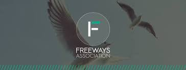

Freeways est le nom du club de logiciels libres de l'Institut Supérieur d'Informatique ISI de Tunis El Manar. Il a été crée en Janvier 2004 dans l’objectif de réunir la population des étudiants intéressés à promouvoir la philosophie du libre et de développer chez chacun d’eux le sens de la recherche et du travail en groupe. Nos activités au sein du Club intègrent tant l’aspect éducatif que l’aspect professionnel. En ce sens, nous organisons des journées concernant l’esprit du logiciel libre aussi nous participons dans les manifestations libre. Nous nous investissons par la même occasion sur d’autres activités à l’exemple des conférences et des ateliers sensibilisants sur le libre. Aussi, nous apportons une aide pour les débutants sur les aspects techniques et nous facilitons l’acquisition des distributions et des outils libres.
-Organisation des journées ouvertes concernant l'esprit du libre, des ateliers, des formations.
-Collaboration avec des organismes et des experts dans le monde de l'open source.
-Compétitions en développement
Android
Sécurité
Robotique
departement departement departement departement departement departement departement departement departement departement departement departement departement departement departement departement departement departement departement departement departement departement
historique historique historique historique historique historique historique historique historique historique historique historique historique historique historique historique historique historique historique historique historique historique historique historique historique historique historique historique historique historique historique historique historique historique
adresse: institut superieur d informatique ariana
tele********